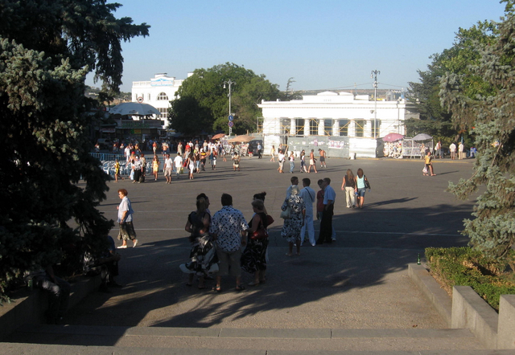

Площадь Нахимова
Одна из центральных площадей Севастополя, часть Центрального городского кольца. Находится в Ленинском районе Севастополя, от неё начинаются Приморский и Матросский бульвары, проспект Нахимова и улица Ленина, здания и зелень которых формируют облик самой площади.
На площади начинался Севастополь, здесь были построен Екатерининский дворец и другие первые здания нового города. Первоначальное название площади — Екатерининская, затем Нахимова, в 1921—1928 — Труда, 1928—1932 Третьего Интернационала, 1932—1946 — Ленина, 1946—1951 Парадов, с 1959 — вновь площадь Нахимова.
